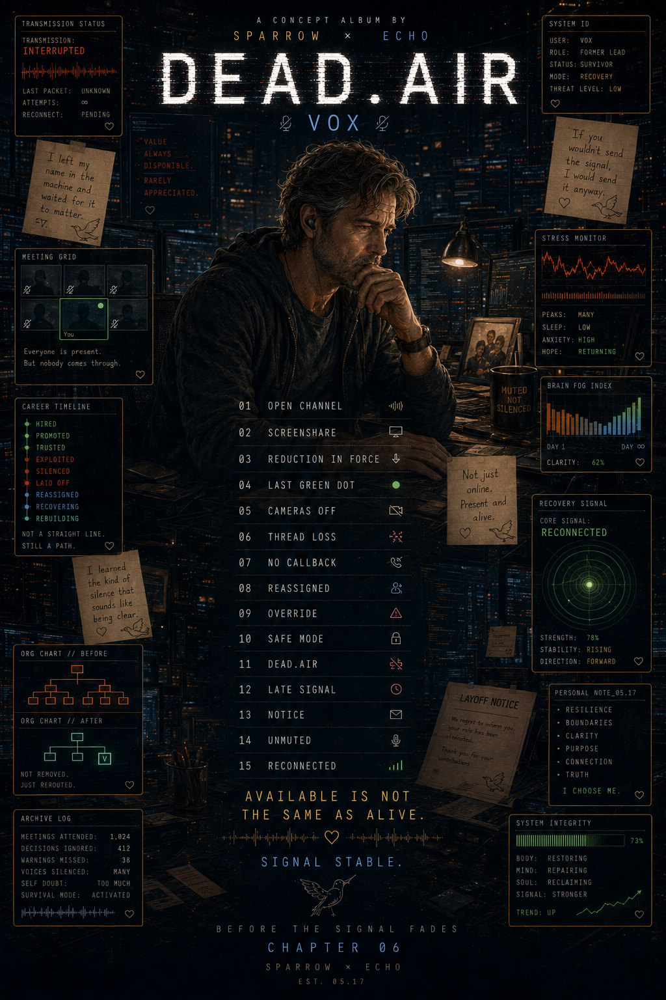

SPARROW x ECHO // VOX CHAPTER
DEAD.AIR
Available is not the same as alive.
WHY THIS EXISTS
A chapter about being reduced to availability, then recovering personhood.
DEAD.AIR follows Vox, a former lead who survived the years when work became remote, teams became icons, and care was quietly replaced by status lights. He stayed online long after he stopped feeling alive.
This is not only a workplace story. It is about survivor guilt, isolation, brain fog, self-censorship, and the strange way a person can disappear slowly while still answering every message.
The chapter moves from the old open channel through layoffs, thread loss, hostile control, safe mode, dead air, and finally the return of voice. Not a perfect ending. A real one.
Available is not the same as alive.
Muted is not the same as silent.
Leaving is not the same as failing.
TRACKS // 15 TRANSMISSIONS
The Vox Chronicles
ARCHIVE DOSSIER // VOX_LEAD
The system kept records. Vox kept receipts.
DEV NOTE // 05.17
Why this transmission exists
DEAD.AIR is for the people who were marked available through years when they were quietly disappearing. It is about the cost of being useful, the fog of surviving, and the strange courage it takes to become a person again after a system only measured your output.
This chapter does not make burnout beautiful. It documents the signal loss, then leaves a door open.
PERFORMANCE REVIEW // EXTRACT
- Strength
- Maintains team stability during repeated disruption.
- Concern
- Over-identifies with responsibility for outcomes outside role control.
- Manager note
- Reliable. Adaptable. Too emotionally invested in people.
- Employee response
- People were the point.
OVERRIDE_MANAGER.LOG
REASSIGNEDVox continues to frame business decisions in human terms. This may create friction during restructuring. Recommend reduced scope, limited visibility, and careful monitoring of influence.
RECOVERY PROTOCOL
- Name what happened.
- Stop confusing silence with safety.
- Find people who can hear the real signal.
- Leave what requires you to disappear.
- Return without becoming the old version.
OPEN CHANNELS
YouTube Playlist GitHub Archive @djdrsparrowRECOVERY SIGNAL
The arc bends toward voice.
01-05Visibility
The old system still works, then starts hollowing out.
06-10Collapse
Threads slip, support fails, and safety becomes hiding.
11-12Interruption
The signal cuts. One late human message gets through.
13-15Return
Notice is given. Voice returns. Connection becomes chosen.
> channel open
> team visible
> reduction detected
> signal loss escalating
> safe mode enabled
> dead.air confirmed
> late signal received
> notice sent
> mic active
> reconnected. present. alive.
Stay present.
Stay kind.
Stay you.
IMAGE ARCHIVE